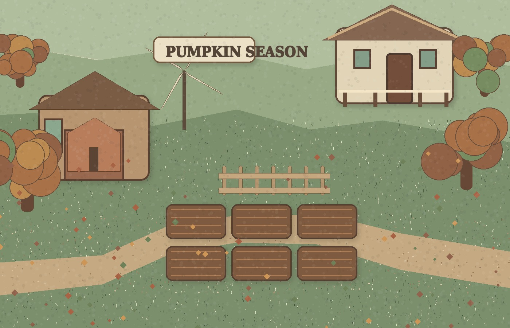
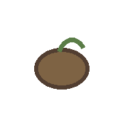
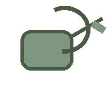
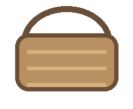
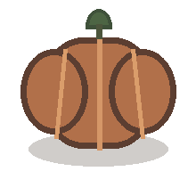
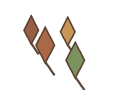

Pumpkin Season
Build 1 · Your first autumn morning
Day
1
9:00 AM
✦
30


Selected plot
Plot 1 · Empty soil
Plant seed · 3
Water plot
Harvest · +9
Choose a plot on the farm. Your first pumpkin patch is waiting.
Today
End day

Energy
10 / 10
Autumn Day
1

Harvest basket
0 pumpkins ready

Seeds:
3

Autumn:
7